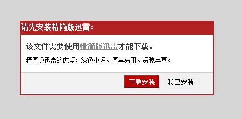

精简版专用链测试页面
逻辑说明
精简版迅雷专用链脚本的主要功能是检测用户是否已经安装精简版迅雷，对未安装精简版的用户提供良好的交互体检。本脚本目前只兼容IE和Chrome浏览器，其他的浏览器暂不兼容。
用户安装精简版迅雷时，我们会向系统注册minithunder://这个协议。所以任何以minithunder://开始的链接都可以拉起精简版迅雷，比如这个链接测试。可以查看注册表中下列项：
HKEY_CLASSES_ROOT\minithunder
HKEY_CLASSES_ROOT\minithunder\shell\open
如果没有安装迅雷精简版或则不支持的浏览器点击专用链的时候会弹出如下的模态框：

如果用户点击下载安装，就会到服务器去下载。如果用户点击我已安装，则会调用系统的协议去下载该资源，且针对此浏览器以后不在提示。
脚本接口说明
示例
<p> <label>使用真实链接：</label> <a href="#example" onclick='MiniXL.Downloader.download( "minithunder://QUFodHRwOi8vZG93bi5zYW5kYWkubmV0L21pbmkvVGh1bmRlck1pbmlJbnN0YWxsLmV4ZVpa", "", window.location, "测试资源")'>下载链接</a> </p> <p> <label>使用专用链：</label> <a href="#example" onclick='MiniXL.Downloader.downloadUrl( "http://down.sandai.net/mini/ThunderMiniInstall.exe", "", window.location, "测试资源")' >下载链接</a> </p>